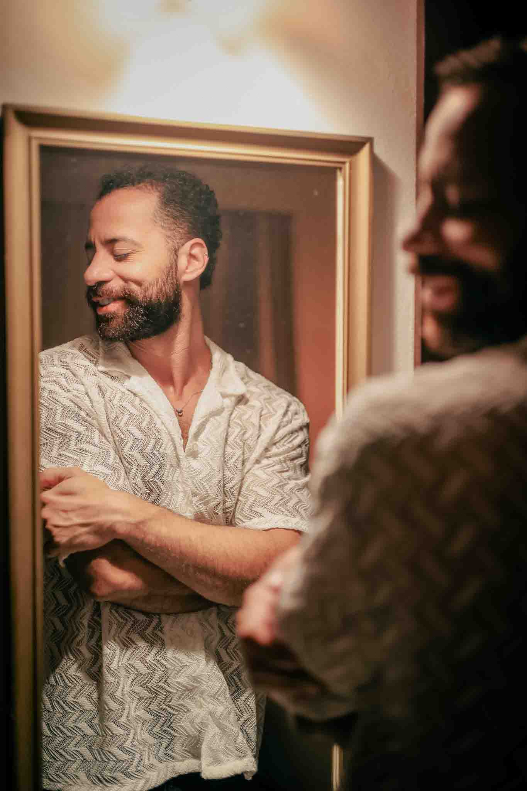

Imagens que fazem um lugar ser sentido antes da chegada.
Fotografia e vídeo para hotéis, pousadas e lugares de experiência que precisam mostrar não só seus espaços, mas a atmosfera que faz alguém escolher ficar.

Fotografia e vídeo para hotéis, pousadas e lugares de experiência que precisam mostrar não só seus espaços, mas a atmosfera que faz alguém escolher ficar.

Ele olha o Instagram. Abre o site. Compara no Booking. Repara na luz, nos detalhes, nos espaços, nas pessoas que aparecem ou não aparecem.
Antes de ler tudo, ele já sente alguma coisa.
Meu trabalho começa aí: construir imagens que ajudam o seu lugar a ser percebido com mais clareza, mais desejo e mais coerência.
Produções pensadas para mostrar a experiência completa do lugar, sem perder a naturalidade, a atmosfera e a sensação real de estar ali.
Imagens dos espaços, detalhes, luz, arquitetura, gastronomia e atmosfera do lugar.
Filmes curtos que contam uma experiência, não apenas uma visita guiada.
Conteúdos pensados para criar continuidade, ritmo e presença no Instagram.
Imagens adaptadas aos canais que influenciam diretamente a decisão de reserva.
Pessoas, gestos e situações reais para tornar o lugar mais vivo e mais fácil de imaginar.
Imagens aéreas ou imersivas quando elas realmente acrescentam algo à percepção do lugar.
Uma leitura profissional da comunicação atual antes de produzir novos conteúdos.
Uma leitura profissional da sua comunicação visual, pensada para entender o que seus futuros hóspedes percebem antes de reservar.
Antes de produzir novas imagens, eu observo o que já existe: Instagram, site, Booking, fotos, vídeos, reels, momentos mostrados, momentos ausentes, presença humana, coerência entre canais e percepção geral do lugar.
O objetivo não é criticar.
É entender o que já funciona, o que está faltando e o que talvez esteja impedindo o hóspede certo de se sentir chamado pelo seu lugar.
01
Análise das imagens já utilizadas: espaços, luz, detalhes, pessoas, ritmo e momentos do dia.
02
Leitura da experiência a partir de fora: desejo, clareza, nível de gama, coerência e confiança.
03
Recomendações concretas para mostrar melhor a atmosfera, os usos reais do espaço e a continuidade entre Instagram, site e Booking.
A produção não começa quando a câmera liga. Primeiro, é preciso entender o que o lugar comunica, o que ainda não aparece e quais imagens podem tornar a experiência mais clara para quem está escolhendo onde ficar.
1.
Observo a identidade, a atmosfera, os pontos fortes e os detalhes que ainda não estão sendo mostrados.
2.
Defino uma intenção clara para as imagens: o que elas precisam fazer sentir, entender e lembrar.
3.
Organizo os momentos importantes de acordo com a luz, o ritmo do lugar e os usos reais dos espaços.
4.
Capto ambientes, detalhes, gestos, transições, presença humana e momentos-chave da experiência.
5.
Penso os conteúdos para Instagram, site, Booking, campanhas e outros pontos de contato com o hóspede.
6.
Entrego materiais claros, coerentes e prontos para uso, com orientação de aplicação quando necessário.
O trabalho é pensado para hotéis, pousadas, villas e marcas de hospitalidade que cuidam da experiência, mas sentem que a comunicação visual ainda não traduz completamente o valor do lugar.
Alguns exemplos de direção visual, fotografia e vídeo para lugares onde a experiência precisava ser sentida, não apenas mostrada.
Quando a comunicação visual é fragmentada, o hóspede pode não entender o verdadeiro nível da experiência. Um bom quarto pode parecer comum. Uma atmosfera forte pode passar despercebida. Um lugar cuidado pode parecer menos especial do que realmente é.
Imagens bem pensadas ajudam o futuro hóspede a imaginar a estadia com mais clareza. Elas criam confiança, aumentam a percepção de valor e tornam a escolha mais natural.
Instagram, site e Booking precisam contar a mesma história.
A presença humana ajuda o hóspede a se projetar no lugar.
A luz, os detalhes e o ritmo comunicam valor antes do texto.
Conteúdos coerentes tornam a experiência mais fácil de entender.
Uma boa imagem não explica tudo. Ela faz o lugar ser sentido.
Se você sente que a experiência real é mais forte do que aquilo que aparece online, podemos conversar.
Falar sobre um projeto